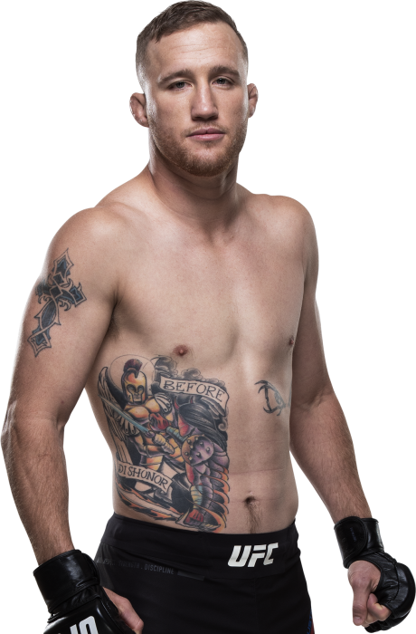

| Result | Fighter | Event | Method/Referee | R | Time |
|---|---|---|---|---|---|
| WIN | Tony Ferguson | UFC 249 | TKO(punch)/Herb Dean | 5 | 3:39 |
| WIN | Donald Ceronne | UFC F.N.158 | TKO (Punches)/Jerin Valel | 1 | 4:18 |
| WIN | Edson Barboza | UFC ESPN 2 | KO (Punch)/Keith Peterson | 1 | 2:30 |
| WIN | Kevin Lee | UFC 216 | Submision(triangle choke)/Herb Dean | 3 | 4:02 |
| WIN | James Vick | UFC F.N.135 | KO (Punches)/Kevin MacDonald | 1 | 1:27 |
| LOSS | Dustin Poirier | UFC FOX 29 | TKO (Punches)/Herb Dean | 4 | 0:33 |
| LOSS | Eddie Alvarez | UFC 218 | KO (Knee)/Herb Dean | 3 | 3:59 |
| WIN | Michael Johnson | TUF 25 | TKO (Punches and Knees)/John McCarthy | 2 | 4:48 |
Justin Ray Gaethje (/ˈɡeɪdʒi/; born November 14, 1988) is an American professional mixed martial artist who currently competes in the lightweight division of the Ultimate Fighting Championship (UFC). As June 30, 2020, he is #11 in the UFC men's pound-for-pound rankings and is the current interim UFC Lightweight Champion.
Gaethje began his amateur MMA career during his studies at the University of Northern Colorado. He amassed a 7–0 amateur record before making his professional debut on August 20, 2011, against Kevin Croom. Gaethje won the fight in the first round via KO due to a slam after his opponent attempted a submission. On the regional circuit in Colorado and Arizona, Gaethje compiled an undefeated 7-0 professional record, with 6 stoppage wins. One of his early victories was over UFC veteran Drew Fickett. Gaethje won by knockout 12 seconds into the first round.
As a two-time Arizona State high school champion and an NCAA Division I All-American, Gaethje has some of the best wrestling credentials in the UFC's lightweight division. Despite his elite wrestling pedigree, he rarely looks for takedowns, instead preferring an entertaining stand-up fighting style. He is well known for the knockout power in his punches, and his debilitating leg kicks. When asked after his loss to Poirier in 2018 why he did not use his wrestling in the bout, Gaethje said, "I’ve been wrestling my whole life. I should’ve and could’ve took him down a couple of times, especially when I had him rocked just to steal a round or two. For some reason, my mind will not let me do it. I think I sold myself so hard on the fact that this is not wrestling. It gets you tired. If I’m going to get tired, I’d rather it be from fighting and not from wrestling. That’s the reason why I never wanted to wrestle. But I did so much cardio this camp that it would not have been a problem for me to turn it into a wrestling match, but I just can’t do it, it would not be fun for me."